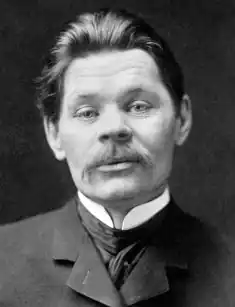
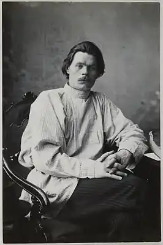

ГОРЬКИЙ, Максим (Горький, Максим; автонім: Пешков, Олексій Максимович — 28.03.1868, м. Нижній Новгород, тепер — Горький — 18.06.1939, Горки під Москвою) — російський письменник.
Олексій Максимович Пешков, який обрав собі літературний псевдонім Максим Горький, є однією із найсуперечливіших постатей у російській літературі 1-ої пол. XX ст. Талановитий письменник, гідний продовжувач кращих традицій російської літератури XIX ст., мислитель-мораліст, який завжди і скрізь поставав на захист Людини, виявився жертвою власних романтичних ілюзій, співцем і гвинтиком страшної машини ідеологічного терору, яка, зрештою, знищила і його самого.
Горький народився 28 березня (за новим стилем) 1868 р. в Нижньому Новгороді в родині столяра-червонодеревника Максима Пешкова. Після смерті батька виховувався в родині свого діда, який мав власну фарбувальню. Початкову освіту Олексія склали два класи училища, яке він не зміг закінчити через нестачу коштів. Відтоді майбутній письменник, за його власним зізнанням, змушений був "піти в люди", заробляючи на прожиток нелегкою працею. Спочатку він прислуговував у крамниці, згодом найнявся до кресляра, мив посуд на пароплаві, працював в іконописній майстерні. Влітку 1884 р. Горький спробував вступити у Казанський університет, але замість навчання "університетами" для нього стало життя, важка боротьба за існування. Почалися роки складних поневірянь, під час яких Горький змінив десятки професій, пережив кілька важких духовних криз, відкрив для себе світ літератури, зблизився із революційно-народницьким рухом. Уже тоді його роздуми про сенс життя не були позбавлені внутрішніх суперечностей, що навіть підштовхнуло його у 1887 р. до спроби самогубства. У записці, яка, на щастя, не стала посмертною, він написав: "У моїй смерті прошу вважати винним німецького поета Гайне, який вигадав зубний біль у серці..." Після револьверного пострілу Горький залишився жити, але поранення спровокувало сухоти, на які він страждатиме все життя. У 1888—1889 і 1891—1898 рр. Горький мандрує Російською імперією (Поволжя, Ясна Поляна, Москва, Дон, Україна, південна Бессарабія, Крим, Кавказ). До цих мандрівок, за словами самого письменника, його спонукало "бажання бачити — де я живу, що за люди навколо мене". У 1889 році Горький був уперше заарештований поліцією, а після звільнення перебував під наглядом. На цей же період припадає і початок його творчої діяльності. Перша літературна публікація Горького відбулася в газеті "Волзький вісник" 26 січня 1885 року. Це був мелодраматичний вірш про смерть дівчини, котру проти волі видали заміж і вона наклала на себе руки. У 1889 р. відбулася зустріч Горького з відомим російським письменником В. Короленком, якому він показав свою поему "Пісня старого дуба ". Незважаючи на негативні відгуки на ці перші спроби, Горький продовжував писати і вже у 90-х роках XIX ст. став одним із найзначніших російських письменників. У 1892 році вийшло друком оповідання Горького "Макар Чудра". Ним і прийнято датувати початок першого (раннього) періоду творчості письменника, який умовно тривав до 1899 р. Невеликі оповідання, що ввійшли у 2-томну збірку "Нариси й оповідання" (1898), принесли йому шалену популярність не лише в Росії, а й у Європі (з 1896 по 1904 pp. критична література про Горького налічувала понад 1860 назв, а за свідченнями сучасників письменника, його успіх перевершив популярність Л. Толстого і Ф. Достоєвського). Рання творчість водночас є і найдовершенішою частиною творчого спадку Горького. Вона, як вважають, у найбільш сконцентрованій формі відобразила літературні модерністські віяння епохи і духовні та філософські пошуки самого письменника. Філософську основу поглядів Горького цього періоду складає пошук нового гуманістичного світогляду, який, на думку письменника, повинен вивести людину зі стану глибокої духовної кризи, яка охопила суспільство на межі століть, проявивши себе в запереченні традиційної моралі та кризі людяності. Вихід Горького убачав у формуванні активної позиції самої людини, в оперті на народні моральні первні, які корегують похибки цивілізації. У філософській позиції Горького цього часу багато спільного з Ф. Ніцше. Обидва вони ставили людину вище від Бога, в обох простежуються елементи бунтарства, нігілізму. Втім, на відміну від Ніцше, Горький ішов не від Людини, а до неї, намагався морально виправдати нігілістичне бунтарство своїх героїв, відшукати у ньому паростки природного гуманізму. Внутрішній трагізм духовних пошуків письменника полягав у тому, що, шукаючи шляхи подолання крайнього суб'єктивного індивідуалізму Ніцше, він прийшов до теорії колективного, "общинного" індивідуалізму. Основна тема ранньої творчості Горького — це пошук Людини ("У наші дні, — писав він, — дуже багато людей, але немає Людини"), моральних засад, які визначатимуть вартий наслідування ідеал людської особистості.У своїх ранніх оповіданнях письменник поєднав елементи реалізму (соціальна критика дійсності, прагнення до типізації) з прийомами романтичної поетики: екзотичні образи (босяки, цигани, контрабандисти, міфологічні й алегоричні постаті) та пейзажі, незвичайні і навіть екстремальні ситуації, що надають творам фабульної гостроти; чітка символіка, споріднена з міфологічними образами та сюжетами, орієнтація на фольклорні жанри (легенда, казка, пісня). У площині проблематики художнє новаторство Горького найвиразніше проявилося у розробці нового типу героя — з активною, життєствердною позицією, із "сонцем у крові", сильного, гордого і красивого, здатного "зміцнити волю людини до життя, збудити в ній бунт проти дійсності...". Ця своєрідна "боротьба за людину", за її моральне самоствердження складає основний конфлікт. Вона присутня практично в усіх ранніх творах письменника. Творчий шлях Горького прийнято розглядати із оповідання "Макар Чудра" (1892). Воно відкриває у прозі письменника цикл творів, художню основу яких становить поетика неоромантизму, а зміст спрямований на розкриття рис і моральних засад, що визначають характер "справжньої" людини. Крім "Макара Чудри", до цього циклу входять оповідання та вірші у прозі, зокрема "Стара Ізергіль", "Пісня про Сокола", "Пісня про Буревісника "та ін. У композиційному плані "Макар Чудра" — оповідання в оповіданні. Вмонтовану в оповідь бувальщину про романтичне кохання розповідає старий циган Макар Чудра. Героями його оповіді є красуня Рада, донька солдата Данила, який пристав до циганського табору, і молодий циган Лойко Зобар. І Рада, і Лойко понад усе цінують почуття власної незалежності, вони горді і вільні, зі "сонцем у крові". Вони кохають одне одного, але коли Рада ставить Лойко умову поступитися його поняттями про чоловічу гідність і честь, визнати зверхність її волі, Лойко воліє радше прийняти смерть. Він вбиває Раду і сам гине від руки її батька. Таким же гордим і незалежним постає у творі й оповідач Макар Чудра, який рішуче повстає проти будь-яких посягань на свободу людини. Оповідання "Стара Ізергіль" ("Старуха Изергиль", 1894) продовжує цикл романтичних творів раннього Горького. Головна героїня оповідання — стара молдаванка Ізергіль, котра розповідає історію свого нелегкого життя, увиразнюючи її двома легендами, які в алегоричній формі розкривають полеміку письменника з філософією Ф. Ніцше. Головний герой першої легенди, що втілює образ ніцшеанської "Надлюдини", — Ларра, син жінки й орла. Він убиває дівчину, яка відмовила йому у коханні, через що люди проганяють його, вважаючи, що вічна самотність буде для нього найжахливішим із можливих покарань. Герой іншої легенди — Данко. У критичний для свого народу момент він вириває з грудей власне серце, яким освітлює дорогу посеред темного лісу. Це допомагає знайти вихід із лісової гущавини, але люди швидко забувають про подвиг Данко, який урятував їх від загибелі ціною власного життя. Життєва філософія Ізергіль перебуває немовби посередині цих двох світоглядних позицій. Тому й композиційно її життєва історія розміщена між двома легендами. Основним змістом життя Ізергіль було кохання — спочатку до рибалки, потім — до розбійника-гуцула, до турка — господаря гарему і його сина, до ченця-поляка. Одним із найбільш резонансних творів Горького романтичного циклу став його знаменитий вірш у прозі "Пісня про Буревісника" ("Песня о Буревестнике", 1901). "Пісню про Буревісника" він написав у Нижньому Новгороді 12 березня 1901 p., де Горький проводив революційну пропаганду серед студентів і робітників. "Пісня "викликала бурю захоплення у колах революційно налаштованої молоді, перетворившись у своєрідний гімн революції. Царська цензура заборонила і "Пісню", і журнал "Жизнь", у якому вона була опублікована. Утім, проблематика твору не така вже й однозначна, як це намагалися потрактувати більшовицькі ідеологи. Попри пов'язуваний з її ідейною спрямованістю революційний пафос, твір, враховуючи особливості світогляду раннього Горького, можна тлумачити і в інших смислових зв'язках (горьківське бачення справжньої людини, її бунтарство проти духовної заскорузлості світу). Звідси випливає й алегоризм образів "Пісні", які зображені за принципом контрасту: на одному полюсі — ідеал духовно піднесеної особистості (Буревісник), а на іншому — налякані життєвими бурями людці, втілені в образах чайок, гагар, пінгвінів. Цікавою деталлю, що характеризує образ Буревісника, є порівняння його з демоном, в чому можна бачити приховане відлуння ніцшеанських ідей про Надлюдину, яка повстає проти Бога. Ознаки неоромантизму у творі такі: алегорична основа, загострений емоційний пафос, виняткова особистість у центрі зображення, винятковість умов, у яких вона зображена, підкресленість героїчного первня тощо. Приблизно з середини 90-х pp. XIX ст. Горький розпочав писати цикл оповідань про т. зв. "босяків" (злодіїв, п'яниць, жебраків, повій тощо). Письменник вважав, що вони — соціально знедолені, але не пригнічені духом, морально багаті люди, вихідці із суспільних низів, які увібрали в себе кращі риси народу, його психологію та світогляд. "Босяки були для мене, — писав Горький, — "незвичайними людьми"... вони не жадібні, не душать одне одного, не прагнуть до збагачення...